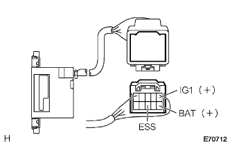
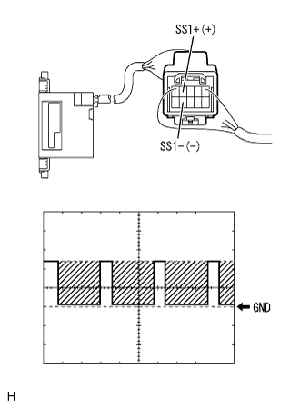

ステアリングセンサ 車上点検 |
| 1. ステアリングセンサ点検 |
|  |
電圧·導通点検
（トヨタエレクトリカルテスター）を使用して、コネクターを切り離し、車両ワイヤーハーネス側コネクターの各端子間の電圧および導通を点検する。
| テスター接続 | 項目 | 測定条件 | 基準値 |
|---|---|---|---|
| IG1←→ボデーアース | 電圧 | IGスイッチON | 10-14V |
| BAT←→ボデーアース | 電圧 | 常時 | 10-14V |
| ESS←→ボデーアース | 電圧 | 常時 | 導通あり |
|  |
波形点検
オシロスコープを使用し、車両ワイヤハーネスのコネクターを接続した状態で、コネクターの裏側から各端子間の波形を点検する。
| 項目 | 内容 |
|---|---|
| 測定端子 | SS1+←→SS1- |
| 計器セット | 2V/DIV、1μS/DIV |
| 測定条件 | 画面出画中 |